On The Apparatus Necessary For The First Practice Of Photography On Paper. Continued
Description
This section is from the book "A Manual Of Photography", by Robert Hunt. Also available from Amazon: A Manual of Photography.
On The Apparatus Necessary For The First Practice Of Photography On Paper. Continued
A great number of experiments should be made with the copying frame before there is any attempt at using the camera obscura.
The Camera Obscura, or Dark Chamber, was the invention of Baptista Porta, of Padua. Its principle will be best understood by the very simple experiment of darkening a room by closing the window-shutters and admitting a pencil of light through a small hole in them. If a piece of paper is held at a little distance from this hole, the figures of external objects will be seen delineated upon it; and, by putting a small lens over the hole, they are rendered much more evident, from the condensation of the rays by the spherical glass.
If, instead of a darkened room, we substitute a darkened box (Fig. 43), the same effect will be seen. Suppose, in the first place, the box to be without the lens, the rays would pass from the external arrow in nearly right lines through the opening, refracted only in passing the solid edges of the hole, and form an image on the back of the dark box. The lens refracts the rays still more, and a smaller, but a more perfectly defined picture, is the result.
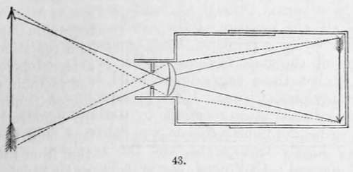As in the phenomena of vision, so in the camera obscura, the image is produced by the radiations proceeding from the external object ; and as these radiations progress from various parts, more or less illuminated, so. are the high lights, the middle tints and shadows, most beautifully preserved in the lenticular image. The colours, also, being in the first instance the effect of some physical modification of the primary cause, are repeated under the same influence; and the definition, the colour, and soft gradation of light and shadow, are so perfect, that few more beautiful optical effects can be exhibited than those of the camera obscura.
Now as every ray of light producing the coloured image is accompanied by the chemical principle actinism, and as this is regulated in action by the luminous intensity of the rays, the most luminous (yellow) producing the least chemical effect, while this increases with the diminishing illuminating power of the coloured rays of the radiating source, we have the impression often opposed, in its relations of light and shade, to the colours of the object we would copy. By referring to the frontispiece to the present volume, the effects produced by copying a coloured image will be seen. The yellows, reds, and those colours usually regarded as lights, are copied as shadows : hence the importance of attention to the colours of the dress, when a portrait is to be taken by any photographic process.
In the ordinary cameras used by artists for sketching, a mirror is introduced, which throws the image on a semitransparent table.
Fig. 44 is a section of one form of such an instrument: a à represents the box, in one end of which is fixed the lens b. The lenticular image falls on the mirror c, placed at such an angle that it is reflected on the plate of ground-glass d. e is a screen to prevent the overpowering influence of daylight, which would render the picture almost invisible. this form of the apparatus, though very interesting as a philosophical toy, and extremely useful to the artist, is by no means fitted for photographic purposes. The radiations from external objects suffer considerable diminution of chemical power in penetrating the lens, and the reflection from the mirror so far reduces its intensity, that its action on photographic agents is slow. To obviate the objection of the reflected image, it is only necessary to place the photographic paper in the place of the mirror, but not in an angular position.
A great variety of these instruments have been introduced to the notice of students of the art, many of them so unnecessarily expensive that they are beyond the reach of the humble amateur.
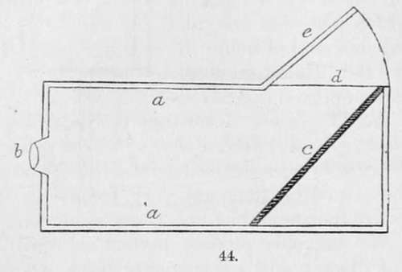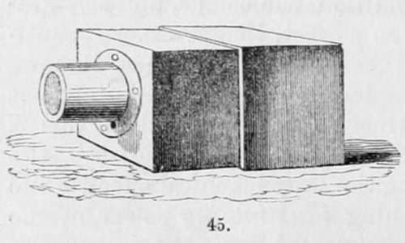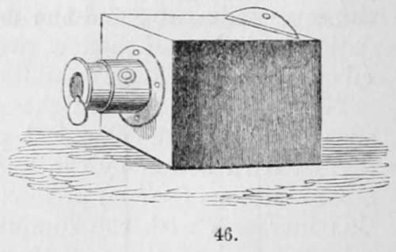It is conceived that a few examples of mechanical contrivances by which the instrument is rendered portable, and in all respects convenient will not be out of place. Fig. 45 represents one box sliding within the other for the purpose of adjusting the focus, the lens being fitted into a brass tube, which screws into the front of the camera. The woodcut (Fig. 46) is but one box, the lens being fitted into one brass tube sliding in another, like a telescope tube, the movable part being adjusted by a screw and rack. The mouth of the tube is contracted, by which any adventitious radiations are obstructed, and a brass shade is adjusted to close the opening if required ; the paper is placed in a case fitted with a glass front, as in Fig. 47, and a shutter, by which it is protected from the light until the moment it is required to throw the image upon it.
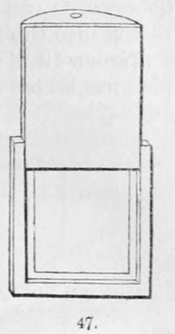In the first edition of this work, a form of camera was described, which possesses the advantages of extreme cheapness, and of being in most respects convenient. It is, therefore, here described in the language I employed in 1841:—
A photographic lens should possess, according to Sir John Herschel, "the three qualities of a flat field, a sharp focus at great inclinations of the visual ray, and a perfect achromaticity." There can be no doubt but these qualifications are very essential,— the two first particularly are indispensable, and there is but one objection to the latter. We can only produce perfect achroma-ticity by a combination of glasses, and experiments prove that by increasing the thickness of the object-glass,*and the number of reflecting and refracting sirfaces, we interrupt a considerable portion of actinism, and consequently weaken the action on the photographic material, whatever it may be; but our opticians have succeeded to a great extent in overcoming this difficulty. We may, to a considerable degree, get rid of the defects arising from chromatic dispersion, without having recourse to a combination of glasses of different refracting powers. I long used myself, and constructed for others, a camera obscura which answered well, with a non-achromatic lens. Fig. 48 a represents the aperture of the lens ; i i', a box sliding into an outer case, h h'; k k, a third division, containing a ground glass at the back, and a door which can be raised or lowered by the screw g, the whole fitting into the frame h h'.
* The recent experiments of the Rev. Mr. Stokes most fully confirm this view.
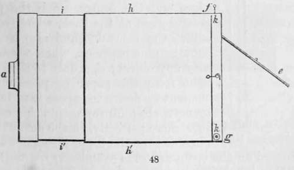Figure 49 is a section of the camera, a is a lens of a perisco-pic form, whose radii of curvature are in the proportion of 2 to 1.
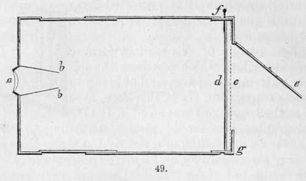This meniscus is placed with its convex surface towards the plane of representation, and with its concavity towards the object.
The aperture of the lens itself is made large, but the pencil of rays admitted is limited by a diaphragm, or stop, constructed as in the figure at b, between it and the plane of representation, at about one-tenth of the focal length from the lens. By this arrangement objects are represented with considerable distinctness over every part of the field, but little difference being observable between the edges and the centre. c is the plate of ground glass at the back, which serves to adjust the focus by, and also to lay the photographic paper on, when we desire to copy any object; d, a door to shut off the light from the paper or plate until the moment we desire to expose it to luminous agency. Fig. 50 represents this screen or door more perfectly, in the act of falling; e is a door at the back, through which the picture formed on the opaque glass is examined; f, a pin, keeping the door, d, in its place.
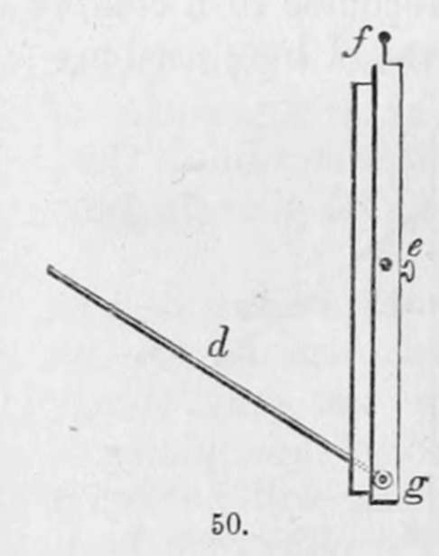The following figures (Figs. 51, 52, 53) represent a more perfect arrangement. Its conveniences are those of folding, and thus packing into a very small compass, for the convenience of travellers. It is, however, only adapted for views, and not for portraits.
With the camera obscura properly arranged, and the copying frame, the photographic student who confines his attention to the processes on paper has nearly all he requires. For the convenience of adjusting the instrument to different heights, and to different angles of elevation, tripod stands are convenient, but not altogether indispensable. They are made in several ways; the two figures, 54 and 55, representing those which appear best adapted to the use of the traveller. The arrangement of compound legs shown in Fig. 54 insures greater steadiness than the other; but the range of movement in Fig. 55 gives it some advantages.
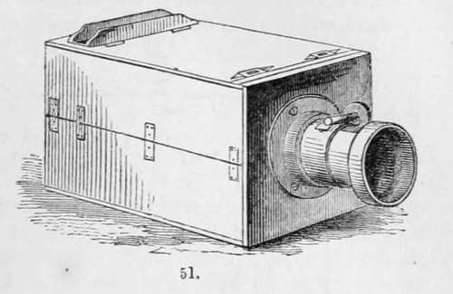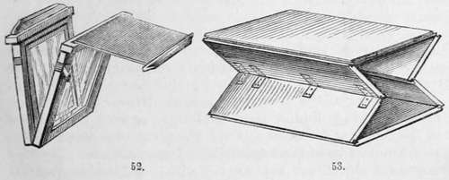Beyond these things, a few dishes, such as are represented in Fig. 56, A A; and a frame B, upon which a photograph can be placed for the purpose of being washed, are the only things required for the practice of photography, except those pieces of apparatus which, belonging to special processes, will be found described in the chapters devoted to them. The object has been in this chapter to enumerate those only which are necessary for an amateur to make his rudimentary experiments.
My object in describing this camera is to enable the young photographer to pursue his earlier studies, without having to incur the cost of a perfect lens. An inferior, and consequently low-priced achromatic lens, should ever be avoided, the results with such being far less perfect than those obtained by means of a good periscopic lens.
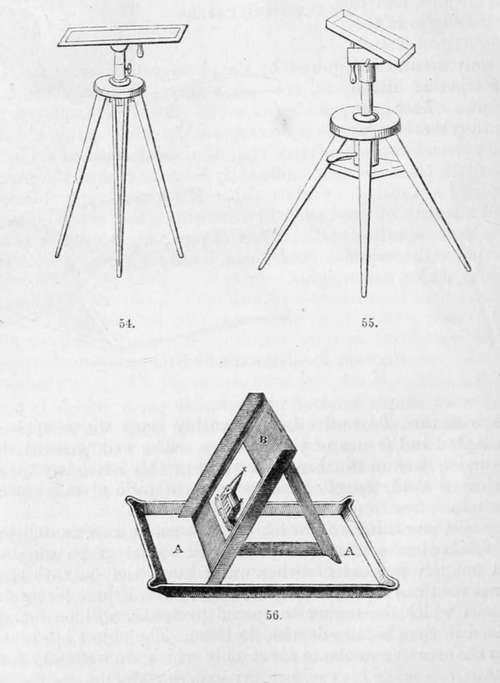
Continue to:
- prev: Chapter II. On The Apparatus Necessary For The First Practice Of Photography On Paper
- Table of Contents
- next: Chapter III. On The Modes Of Manipulation Adopted In The Preparation Of Sensitive Papers